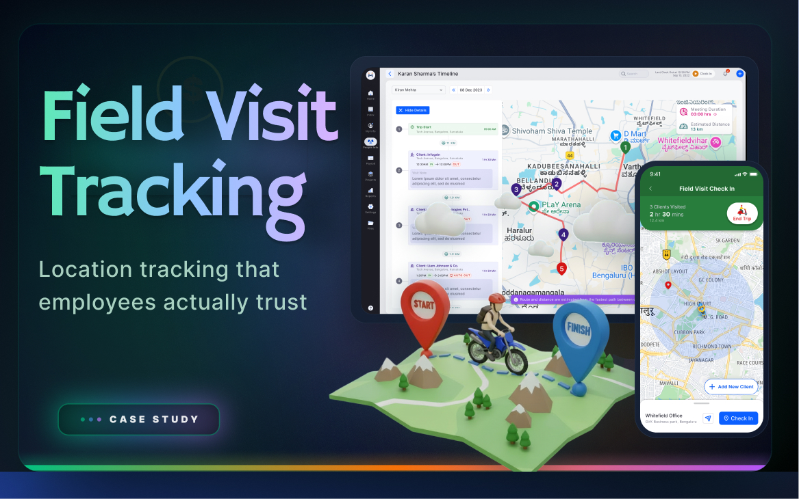

Field employees — sales reps, service technicians, delivery staff — reacted strongly to location tracking. "My company will know where I am every minute. What if the GPS shows me somewhere wrong? What if I stop for tea?" These weren't irrational fears. They reflected real experiences with opaque systems that offered no way to verify or dispute the data.
Managers and admins, meanwhile, needed reliable visit records, distance tracking, and visit duration to verify field work and process expense claims. The same data felt completely different from each side.
The defining design decision came from the research: if employees could see their own location data — the same view their manager sees — resistance would drop. Transparency, not restriction, was the answer.
The mobile experience centred on a visit timeline: check-in location on a map, distance from last stop, time at each location, check-out. Employees could see their entire day's visit history — the same data their manager viewed.
Expense linking was built into the check-out flow: "Did you incur any expenses during this visit?" — capturing expenses at the point of visit rather than requiring a separate submission later. This reduced the friction that caused many field employees to under-report or skip expense claims entirely.
The employee mobile prototype showed full visit history with map, timestamps, and distance. The admin prototype showed the same data with additional analytics — average visit duration, total distance, visit frequency per client. Expense linking was tested as a slide-up during check-out, keeping the flow in one screen rather than navigating away.
Post-test interviews with field employees who could see their own data showed significantly lower resistance compared to those who couldn't. Expense linking during check-out captured expenses at a far higher rate than the previous separate submission flow. GPS inaccuracy in poor-signal areas remained a concern — we added a manual location correction option as a fallback so employees could flag a wrong location without needing to contact HR.
Shipped: Employee-visible visit history with map and timeline, distance and duration tracking, expense linking at check-out, manual location correction fallback, admin analytics dashboard with visit frequency and route summary.